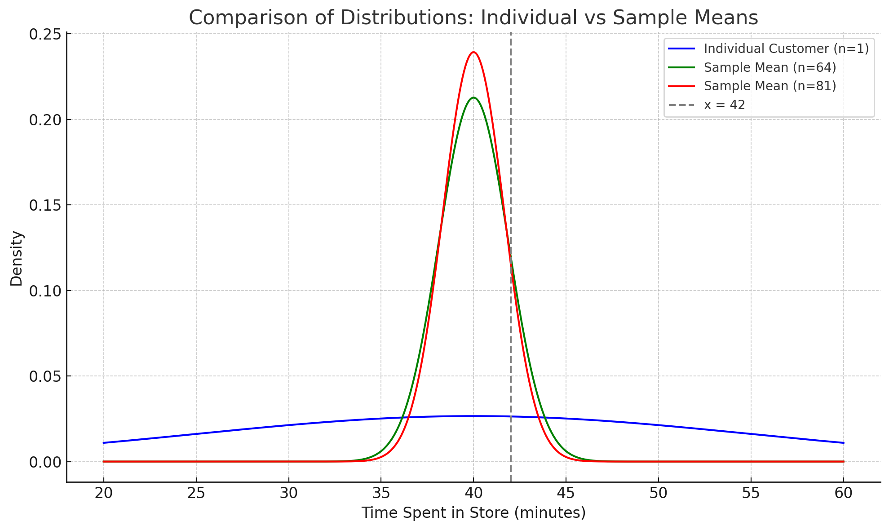
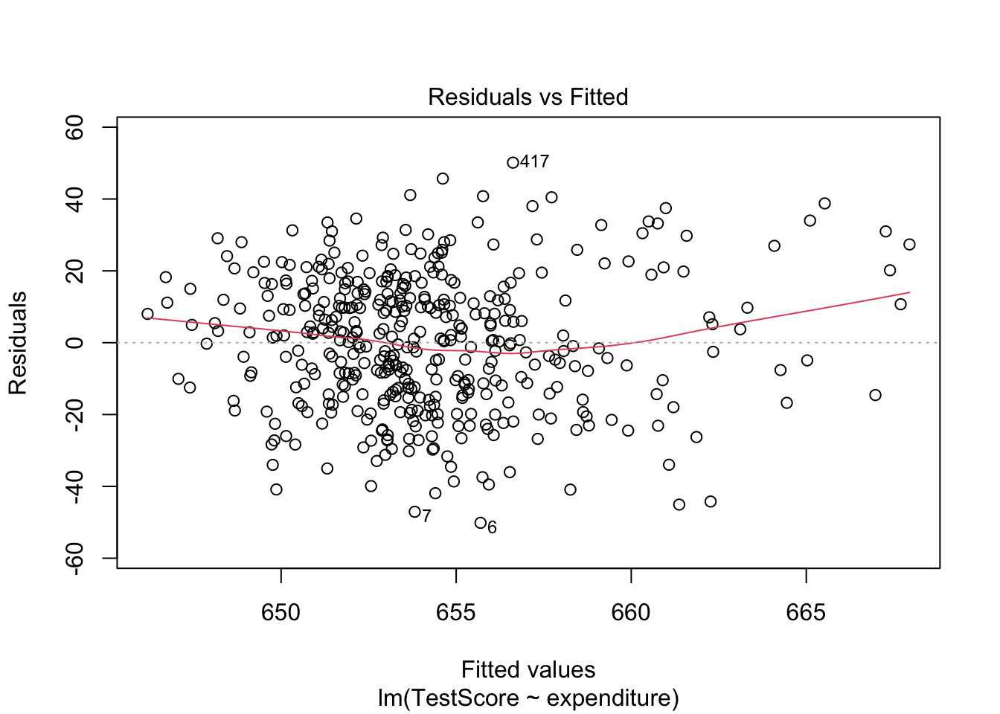

Theoretical Framework of Linear Regression
In this section, we will discuss the theoretical framework of linear regression, including the assumptions underlying the linear regression model and essential hypothesis tests.
Q: Why the assumptions matter?
A: In short, violation of the assumptions may lead to biased or inefficient estimates, incorrect inferences, and unreliable predictions.
1 Assumptions of Linear Regression
Q: What are the assumptions of linear regression?
A: The Gauss-Markov Assumptions ensure that the Ordinary Least Squares (OLS) estimator is the Best Linear Unbiased Estimator (BLUE).
Linearity: The relationship between the independent variable(s) and the dependent variable is linear in parameters.
No perfect multicollinearity: The independent variables are NOT perfectly correlated.
Error has zero conditional mean
Error is homoskedastic
- Homoskedasticity: The variance of the error term is constant across all levels of the independent variable(s).
In time series settings (we won’t cover in this course), we also assume:
- No autocorrelation: The error terms are not correlated with each other.
Residuals are normally distributed
This assumption is useful for conducting hypothesis tests and constructing confidence intervals.
Large outliers are unlikely
This assumption requires that observations with values of \(X_i\), \(Y_i\), or both that are far outside the usual range of the data are unlikely.
Large outliers can make OLS regression results misleading as OLS are sensitive to outliers.
Mathematically, this assumption can be stated as: \(X\) and \(Y\) have finite kurtosis.
2 Regression Framework and OLS Estimator
Multiple linear regression models is defined as
\[ Y_i = \beta_0 + \beta_1 X_{i1} + \beta_2 X_{i2} + ... + \beta_k X_{ik} + \varepsilon_i \]
where
- \(i=1,\ldots, n\) indexes the observations,
- \(Y_i\) is the dependent variable, and
- \(X_{ij}\) represents the \(j\)-th independent variable for observation \(i\), with \(j = 1, \ldots, k\) and \(k\) denoting the total number of independent variables.
- The coefficients \(\beta_j\) are to be estimated, and
- \(\varepsilon_i\) is the error term.
The OLS estimator \(\hat{\beta}^{OLS}\) minimizes the sum of squared residuals (SSR):
\[ \hat{\beta}^{OLS} = \arg\min_{\beta} \sum_{i=1}^{n} e_i^2 \]
where \(e_i = Y_i - \hat{Y}_i\) is the residual for observation \(i\).
\(\hat{Y}_i\) is the predicted value of \(Y_i\) given the estimated coefficients.
\[ \hat{\beta}^{OLS} = \arg\min_{\beta} \sum_{i=1}^{n} (Y_i - \beta_0 - \sum_{j=1}^{k} \beta_j X_{ij})^2 \]
\(\hat{\beta}^{OLS}\) can be obtained by the first order condition (setting the derivative of SSR with respect to each \(\beta_j\) to zero and solving the resulting system of equations).
Read OLS in Matrix Form for more details. We won’t cover the OLS derivation in this course.
Here we give the direct formula for the OLS estimator:
\[ \hat\beta = \left(\sum_{i=1}^n X_iX_i'\right)^{-1} \left(\sum_{i=1}^n X_iY_i\right) \]
where
\[ X_i = \begin{pmatrix}1 \\ X_{i1} \\ X_{i2} \\ \vdots \\ X_{ik}\end{pmatrix} \]
is a \((k+1) \times 1\) vector of independent variables including the intercept for observation \(i\).
Properties of OLS estimator:
- Unbiasedness: \(E[\hat{\beta}^{OLS}] = \beta\) (if Gauss-Markov assumptions hold)
- Efficiency: Among all linear unbiased estimators, OLS has the smallest variance
- Consistency: As sample size \(n \to \infty\), \(\hat{\beta}^{OLS} \to \beta\) in probability
2.1 Exact Distribution of OLS Estimator
Under the assumption of normally distributed errors, \(\boldsymbol{\varepsilon} \vert \boldsymbol{X} \sim N(\boldsymbol{0}, \sigma^2\boldsymbol{I})\), we have in matrix form
\[ \hat{\boldsymbol{\beta}} \sim N(\boldsymbol{\beta}, \sigma^2 (\boldsymbol{X}'\boldsymbol{X})^{-1}). \tag{1}\]
where
- \(\sigma^2 = \var (\varepsilon_i \mid \bX)\) is the variance of the error term.
- \(\bX\) is the matrix of independent variables. \[ \bX = \begin{pmatrix} X_1' \\ X_2' \\ \vdots \\ X_n' \end{pmatrix}_{n \times (k+1)} \]
Equation 1 is called the exact (finite-sample) distribution of the OLS estimator.
\(\var(\hat\bbeta) = \sigma^2 (\boldsymbol{X}'\boldsymbol{X})^{-1}\) is called the variance-covariance matrix of the OLS estimator, often denoted as \(V_{\hat\beta}.\)
We estimate \(\sigma^2\) with \(\hat{\sigma}^2:\) \[ \hat{\sigma}^2 = \frac{\sum_{i=1}^ne_i^2}{n-k-1}. \]
The standard errors of \(\hat{\beta}_j\), \(j=1,\ldots,k,\) are given by the square root of the \((j,j)\) element of the variance-covariance matrix, \(V_{\hat\beta}\).
The individual coefficient estimates \(\hat{\beta}_j\) are normally distributed:
\[ \hat{\beta}_j \sim N(\beta_j, \sigma^2 v_{jj}) \]
3 Sampling Distribution of OLS Estimator
Becausethe OLS estimator \(\hat\beta_0, \hat\beta_1, \ldots\) are computed from a randomly drawn sample of data, the estimators themselves are random variables with a probability distribution.
The sampling distribution describes the values they could take over different possible random samples. In small samples, theses sampling distributions are complicated, but in large samples, they are normal because of the Central Limit Theorem (CLT).
Sampling Distribution vs. Exact Distribution
- The distribution depends on the sample data \((X_i, Y_i).\)
- Based on Central Limit Theorem (CLT), we can establish the sampling distribution of \(\hat\bbeta\) when sample size is large, i.e., \(n\to\infty\).
3.1 Central Limit Theorem (CLT)
Theorem 1 Suppose that \(X_1, \ldots, X_n\) is an independent and identically distributed (iid) sequence with a finite mean \(\mathbb{E}(X_i)=\mu\) and variance \(\text{Var}(X_i)=\sigma^2\), where \(0<\sigma^2<\infty\).
Define a sample mean: \(\overline{X}=\frac{1}{n}\sum_{i=1}^n X_i.\)
The Lindeberg-Lévy CLT states that
\[ \frac{\overline{X}-\mathbb{E}[\overline{X}]}{\sqrt{\text{Var}[\overline{X}]}} = \frac{\overline{X}-\mu}{\sqrt{\sigma^2/n}} = {\color{#00CC66} \sqrt{n} \cdot \frac{\overline{X}-\mu}{\sigma} } \xrightarrow{d} N(0,1) \] where \(\xrightarrow{d}\) denotes convergence in distribution.
Alternative expressions of CLT: \[ \begin{split} \sqrt{n} (\overline{X}-\mu) & \xrightarrow{d} N(0,\sigma^2) \\ \red{\overline{X}} & \red{\xrightarrow{d} N(\mu, \frac{\sigma^2}{n})} \end{split} \]
Q: Why does CLT matter?
A:
The central limit theorem implies that if \(N\) is large enough, we can approximate the distribution of \(\overline{X}\) by the standard normal distribution with mean \(\mu\) and variance \(\sigma^2 / N\) regardless of the underlying distribution of \(X.\)
The scaling by \(n\) is crucial. \[ \sigma_{\overline{X}}^2 = \text{Var}[\overline{X}] = \frac{\sigma^2}{n} \] This means as sample size increases, the sample variance shrinks at the rate of \(1/n\).
TipInterpretation: As the sample size \(n\) increases,the mean becomes more concentrated around the true population mean \(\mu\).
How large must \(n\) be for the distribution of \(\overline{X}\) to be approximately normal?
There is no definitive answer, but a common rule of thumb is that \(n \geq 30\) is often sufficient for the CLT to provide a good approximation.
Because the distribution of \(\overline{X}\) approaches the normal distribution as \(n\) increases, \(\overline{X}\) is said to have an asymptotic normal distribution.
3.2 CLT Example
The amount of time customers spend in a grocery store is a random variable with mean \(\mu = 40\) minutes and standard deviation \(\sigma = 15\) minutes. Assume each customer’s time in the store is independent of others.
\[ \mathbb{E}[X] = \mu = 40, \quad \text{and} \quad \text{SD}(X) = \sigma = 15 \]
Consider the following probabilities:
Example 1 Assuming \(X\) is normally distributed, what is the probability that a randomly selected customer spends more than 42 minutes in the store, i.e., compute \(P(X > 42)\)?
Use the normal distribution table to look up the probabilities.
Individual Customer
We define the standard normal variable \(Z\) as:
\[ Z = \frac{X - \mu}{\sigma} \sim N(0,1) \]
where \(\mu = 40\) and \(\sigma = 15\).
To compute \(P(X > 42)\), we convert to the standard normal:
\[ P(X > 42) = P(\frac{X-40}{15} > \frac{42-40}{15}) = P(Z > 0.1333) \]
By symmetry of the normal distribution:
\[P(Z > 0.1333) = P(Z < -0.1333) = \Phi(-0.1333) = 0.4483\]
where \(\Phi(\cdot)\) denotes the cumulative distribution function (CDF) of the standard normal distribution.
Interpretation: There is approximately a 44.83% probability that a randomly selected customer will spend more than 42 minutes in the store.
Note that the specific distribution for \(X\), i.e., normality here, is required to compute the probability for a single customer.
Example 2 Given a random sample of \(n=64\) customers, what is the probability of the average time spent by the 64 customers exceeds 42 minutes, i.e., compute \(P(\overline{X}_{64} > 42)\)?
Hint: apply CLT and justify why CLT can be applied here.
Sample Mean for \(n = 64\)
By the Central Limit Theorem, for large \(n\) with finite mean and variance, the sampling distribution of the sample mean \(\overline{X}_{64}\) is approximately normal (regardless the distribution of \(X\)):
\[ \overline{X}_{64} \sim N (\mu, \frac{\sigma^2}{n}) \]
Plug in \(\mu = 40\) and \(\sigma = 15\):
\[ \sigma_{\overline{X}_{64}} = \frac{\sigma}{\sqrt{n}} = \frac{15}{\sqrt{64}} = 1.875 \]
According to CLT \(\overline{X}_{64}\) is normally distributed:
\[ \overline{X}_{64} \sim N\left(40, 1.875^2\right) \]
To calculate \(P(\overline{X} > 42)\), we standardize the sample average to the standard normal variable \(Z\), defined as:
\[ Z = \frac{\overline{X} - \mu}{\sigma/\sqrt{n}} = \frac{\overline{X} - 40}{1.875} \]
We can rewrite the probability in terms of \(Z\):
\[ P(\overline{X} > 42) = P(\frac{\overline{X} - \mu}{\sigma/\sqrt{n}} > \frac{42 - 40}{1.875}) = P(Z > 1.067) \]
Using the standard normal distribution table:
\[ P(Z > 1.067) = P(Z < -1.067) \]
Since the standard normal distribution table is rounded at two decimal places, we look up \(P(Z < -1.07) = 0.1423\):
Interpretation: There is a 14.23% probability that the average time spent by a random sample of 64 customers exceeds 42 minutes.
Example 3 Given a random sample of \(n=81\) customers, what is the probability of the average time spent by the 81 customers exceeds 42 minutes, i.e., compute \(P(\overline{X}_{81} > 42)\)?
Sample Mean for \(n = 81\)
\[ \sigma_{\overline{X}_{81}} = \frac{\sigma}{\sqrt{n}} = \frac{15}{\sqrt{81}} = \frac{15}{9} = 1.667 \]
According to CLT \(\overline{X}_{81}\) is normally distributed:
\[ \overline{X}_{81} \sim N(\mu= 40, \sigma_{\overline{X}_{81}} = 1.667^2) \]
Standardize the sample average
\[ P(\overline{X} > 42) = P(\frac{\overline{X}-\mu}{\sigma_{\overline{X}_{81}}} > \frac{42-40}{1.667}) \]
Rewrite the probability in terms of \(Z\):
\[ z = \frac{42 - 40}{1.667} = 1.20 \]
\[ P(\overline{X} > 42) = P(Z > 1.20) \]
Look up the normal distribution table \[ P(Z > 1.20) = P(Z<-1.2) \approx 0.1151 \]
Interpretation: A random sample of 16 customers has a 11.51% chance of yielding an average time above 42 minutes.
Example 4 Discussion: Compare your results in the three probabilities. Provide a brief interpretation of how the probabilities differ and why.
For a single customer, there is a 44.83% chance of spending more than 42 minutes.
For the average of 64 customers, the probability drops to 14.23%.
For the average of 81 customers, it drops further to 11.51%.
Why? As sample size increases, the variability (standard deviation) of the sample mean decreases, making it less likely to observe extreme values like an average over 42 minutes. This demonstrates the Central Limit Theorem and the stabilizing effect of larger samples. (See Figure 1 for a graphical illustration.)
- The individual distribution is wider (larger standard deviation), so the chance of extreme values is higher.
- As sample size increases, the standard error decreases, so the distribution of the sample mean becomes narrower.
- This means it becomes less likely to observe a sample mean far from the population mean.
Key Takeaways from CLT
Generally, as the sample size increases, the sampling distribution of the sample mean becomes more concentrated around the population mean.
This reflects a reduction in variability: larger samples yield more precise estimates of the population mean.
Conversely, smaller sample sizes result in a wider sampling distribution, indicating greater variability in the sample mean.
3.3 Large Sample Distribution of OLS Estimator
Now we can establish the large sample distribution of the OLS estimator \(\hat\bbeta\) based on CLT.
Under the Gauss-Markov assumptions, as \(n\to\infty\), \[ \sqrt{n} (\hat\bbeta - \bbeta) \xrightarrow{d} N(0, \sigma^2 E(\bX_i\bX_i')^{-1}) \]
Again, note the scaling by \(\sqrt{n}.\) It shows how fast the estimator \(\hat\bbeta\) converges to the true parameter \(\bbeta\) as sample size \(n\) increases.
Note the difference of the variance between the exact distribution and the large sample distribution.
- The exact distribution depends on the sample data \(\bX'\bX\)
- The large sample distribution depends on the population moment \(E(\bX_i\bX_i')\).
It suggests that \(\hat\bbeta\) is asymptotically normal and consistent.
“Consistency” means that as the sample size \(n\) increases, the estimator \(\hat\bbeta\) converges in probability to the true parameter \(\bbeta\).
4 Measure of Fit
We often use \(R^2\) to measure the goodness of fit of a regression model.
- \(R^2\) is called “the coefficient of determination.”
- It represents the proportion of variance in the dependent variable that is predictable by the regression model.
- \(0\le R^2\le 1\)
\(R^2\) is defined as:
\[ R^2 = 1 - \frac{SSR}{SST} = \frac{SST - SSR}{SST} = \frac{SSE}{SST} \]
where
- \(SSR = \sum_{i=1}^{n} (Y_i - \hat{Y}_i)^2 = \sum_{i=1}^{n} e_i^2\) is the sum of squared residuals (unexplained variation)
- \(SST = \sum_{i=1}^{n} (Y_i - \bar{Y})^2\) is the total sum of squares (total variation)
- \(SSE = \sum_{i=1}^{n} (\hat{Y}_i - \bar{Y})^2\) is the explained sum of squares (explained variation)
- \(\bar{Y}= \frac{1}{n}\sum_{i=1}^n Y_i\) is the mean of the dependent variable
Note that adding variables always increases \(R^2\), even if the new variables are not statistically significant. → To address this, we use the adjusted \(R^2\).
In a regression model with multiple explanatory variables, we often use adjusted \(R^2\) that adjusts the number of explanatory variables.
“adjusted \(R^2\)” or “R-bar-squared”, defined by \[ \overline{R}^2 = 1- \frac{n-1}{n-k}(1-R^2) , \] which imposes a penalty as \(k\) increases in a given sample size \(n\).
5 Homoskedasticity
Homoskedasticity assumption requires constant variance of the error term across all levels of the independent variable(s).
\[ \var(\varepsilon_i | X) = \sigma^2 \]
When the assumption is violated, we have heteroskedasticity:
\[ \var(\varepsilon_i | X) = \sigma^2_i \]
that is, the variance of the error term varies with the level of the independent variable(s).
If the error has heteroskedasticity, the standard error under homoskedasticity assumption will be underestimated, leading to invalid t statistics, affecting hypothesis tests and confidence intervals.
5.1 Detection of Heteroskedasticity
5.2 Graphical Method
A common graphical method to detect heteroskedasticity is to plot the residuals against the fitted values or one of the independent variables.
Recall the CASchools example, we regress TestScore on expenditure.

We recap the figure summary below:
The residuals appear reasonably balanced around zero, though the spread suggests substantial unexplained variation.
The spread of residuals seems to increase slightly with fitted values, indicating potential heteroskedasticity (non-constant variance of errors). This suggests that the assumption of homoskedasticity may be violated, which could affect the reliability of our coefficient estimates standard errors.
5.3 Fix Heteroskedasticity
A quick fix is to use heteroskedasticity-robust standard errors, which are valid even when the homoskedasticity assumption is violated.
library(tidyverse)
library(sandwich) # for robust standard errors
library(lmtest) # for coeftest()
library(stargazer)
f_name <- "https://raw.githubusercontent.com/my1396/FIN5005-Fall2025/refs/heads/main/data/CASchools_test_score.csv"
cas <- read_csv(f_name,
col_types = cols(
county = col_factor(), # read as factor
grades = col_factor()
)
)
cas <- cas %>%
mutate(TestScore = (read + math) / 2)
model <- lm(TestScore ~ expenditure, data = cas)# OLS standard errors
se_ols <- sqrt(diag(vcov(model)))
# HC1 heteroskedasticity-robust standard errors
se_hc1 <- sqrt(diag(vcovHC(model, type = "HC1")))
# Stargazer output: same model, different SEs
stargazer(model, model,
se = list(se_ols, se_hc1),
digits = 4,
column.labels = c("OLS SE", "Robust SE"),
type = "text"
)
===========================================================
Dependent variable:
----------------------------
TestScore
OLS SE Robust SE
(1) (2)
-----------------------------------------------------------
expenditure 0.0057*** 0.0057***
(0.0014) (0.0016)
Constant 623.6165*** 623.6165***
(7.7197) (8.4664)
-----------------------------------------------------------
Observations 420 420
R2 0.0366 0.0366
Adjusted R2 0.0343 0.0343
Residual Std. Error (df = 418) 18.7239 18.7239
F Statistic (df = 1; 418) 15.8734*** 15.8734***
===========================================================
Note: *p<0.1; **p<0.05; ***p<0.01Under the heteroskedasticity-robust standard errors:
- No effects on the coefficient estimates.
- The Std. Error is slightly larger (0.001620 vs. 0.001443). The coefficient remains statistically significant at the 5% level.
Interpretation
The heteroskedasticity-robust results suggest that the OLS standard errors may have been too optimistic (underestimated variability). While the statistical significance of the expenditure effect is slightly reduced, it remains highly significant, indicating a robust positive relationship between expenditure and test scores.